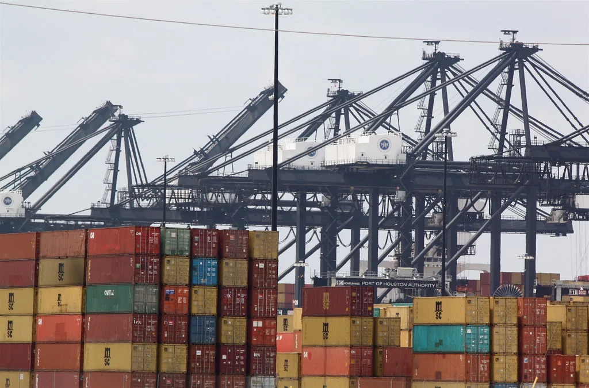

김정관 산업장관 긴급 방미…대미투자 1호 프로젝트 막판 조율
김정관 산업통상부 장관이 16일 미국으로 긴급 출국해 대미 투자 이행 방안과 추가 관세 조치 등 주요 통상 현안을 놓고 미국 측과 협의에 들어갔다. 김 장관은 현지에서 취재진과 만나 "대미투자와 관련해 막판 다양한 쟁점이 남아 있으며, 어떻게든 해결하는 것이 목표"라고 밝혔다. 이번 방미는 지난해 한미 양국이 합의한 3500억달러 규모 대미 투자 이행 작업이 막바지 단계에 접어든 가운데 이뤄졌다.
앞서 한미 양국은 미국의 상호관세율을 25%에서 15%로 낮추는 조건으로 한국이 3500억달러 규모의 대미 투자에 나서기로 합의한 바 있다. 산업통상부는 이 가운데 이르면 이달 말 발표를 목표로 하는 '대미투자 1호 프로젝트'로 미국 내 가스복합화력발전소 사업을 우선 검토하고 있는 것으로 전해졌다. 김 장관은 이번 방미 기간 미국 측 관계자들과 프로젝트의 구체적인 사업 구조와 세부 조건을 조율하는 데 집중할 것으로 알려졌다.

이번 협의에서는 대미 투자 프로젝트 선정과 함께 한국의 '특정민감국'(sensitive country) 지정 해제 문제도 주요 의제로 다뤄지고 있는 것으로 전해졌다. 정부는 이 지정이 유지될 경우 반도체와 AI 관련 수출입 절차 전반에 걸쳐 최대 수십조원 규모의 관세·통상 리스크로 이어질 수 있다고 보고, 워싱턴을 상대로 지정 해제를 위한 외교적 노력을 이어가고 있다. 산업계에서는 이 지정 여부가 향후 대미 수출 기업들의 사업 계획에도 직접적인 영향을 줄 수 있다는 점에서 협상 결과를 예의주시하는 분위기다.
동시에 미국이 무역법 301조 조사 결과에 따라 추가 관세를 부과할 가능성도 거론되면서 산업계의 긴장감이 커지고 있다. 기존에 합의된 15% 관세율보다 더 높은 세율이 특정 품목에 적용될 수 있다는 우려가 나오는 가운데, 정부는 이번 방미를 계기로 관련 리스크를 최소화하는 방안도 함께 논의하고 있는 것으로 전해졌다. 이번 방미에 앞서 통상교섭 실무를 총괄해온 여한구 통상교섭본부장이 자리에서 물러난 것으로 알려지면서, 협상 라인 재정비가 이번 협의에 어떤 영향을 미칠지도 관심사로 떠올랐다.

업계에서는 대미 투자 프로젝트가 예정대로 8월 말 또는 9월 초 발표될 경우, 이후 후속 프로젝트 선정과 자금 집행 계획도 속도를 낼 것으로 내다보고 있다. 특히 가스복합화력발전소 사업이 첫 프로젝트로 확정될 경우 국내 발전·플랜트 관련 기업들의 수주 기회로 이어질 수 있다는 기대도 나온다. 다만 3500억달러라는 투자 규모 자체가 워낙 크다 보니, 자금 조달 방식과 투자 회수 구조를 둘러싼 한미 간 이견도 여전히 남아 있는 것으로 전해졌다.
정부는 이번 방미 협의 결과를 바탕으로 이달 말까지 대미투자 1호 프로젝트를 공식 발표하겠다는 목표를 유지하고 있다. 산업통상부 관계자는 남은 쟁점들을 조속히 해소해 투자 이행에 속도를 내겠다는 입장을 밝힌 것으로 전해졌다. 이번 협상 결과는 관세율 유지 여부는 물론 특정민감국 지정 해제, 반도체·자동차 등 주요 수출 품목의 대미 접근성에도 직결되는 만큼, 정부는 협상 진행 상황을 지속적으로 점검하며 국내 기업들에 미칠 영향을 최소화하겠다는 방침이다.